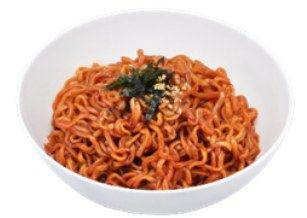
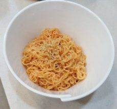

| 메뉴명 | 비빔면 |
|---|---|
| 판매가격 | 4,500원 |
| 원재료 | 팔도 비빔면 |
| 사용 부자재 | 라면용기 |
| 메뉴특징 | 얇은 면에 매콤,새콤한 소스로 비빈 차가운 비빔면 |
조리방법

1
냄비에 물 500g을 넣고 인덕션 8번으로 끓인다.
냄비에 물 500g을 넣고 인덕션 8번으로 끓인다.

2
[비빔면] 버튼을 누른 후 [시작/정지] 버튼을 눌러 조리를 한다.
[비빔면] 버튼을 누른 후 [시작/정지] 버튼을 눌러 조리를 한다.

3
면이 익으면 찬물에 면을 씻어주고 물기를 잘 턴 뒤, 비빔면소스를 넣어 젓가락으로 비벼준 뒤, 그릇에 옮긴다.
면이 익으면 찬물에 면을 씻어주고 물기를 잘 턴 뒤, 비빔면소스를 넣어 젓가락으로 비벼준 뒤, 그릇에 옮긴다.

4
면이 익으면 채에 받쳐 흐르는 찬물에 충분히 면을 헹궈주고 꾹꾹 눌러 물기를 제거한다.
면이 익으면 채에 받쳐 흐르는 찬물에 충분히 면을 헹궈주고 꾹꾹 눌러 물기를 제거한다.

5
헹군 면사리를 다시 냄비에 담고 비빔면소스를 넣어 젓가락으로 골고루 비벼준다.
헹군 면사리를 다시 냄비에 담고 비빔면소스를 넣어 젓가락으로 골고루 비벼준다.

6
그릇에 옮겨 담고 단무지와 함께 제공한다.
(▶계란프라이 추가 가능)
그릇에 옮겨 담고 단무지와 함께 제공한다.
(▶계란프라이 추가 가능)
※ 토핑 추가 ※
▶계란: 삶은계란1/2 2개 올리기 / 계란후라이 1개 마지막에 올리기
▶만두 4개(튀김시간 : 4분)
▶치즈: 마지막에 올리기 (치즈를 먼저 꺼내 놓지 않기)
*본 매뉴얼은 벌툰에 저작권이 있습니다. 유출 및 복제를 금합니다.
※ 기존 라면조리기:
[일반라면]모드로 조리하기
※ 면을 헹군 뒤, 물기를 잘 제거해야 라면이 싱겁지 않음
※ 제조 후 최대한 빨리 제공할 것.